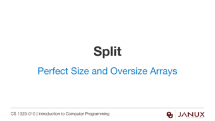
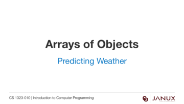

Perfect Size and Oversize Arrays
This section covers perfect and oversize arrays.
Memory allocation for arrays of objects explained.
Java code developed in the video from this lesson.
Lecture presentation
Lecture presentation

